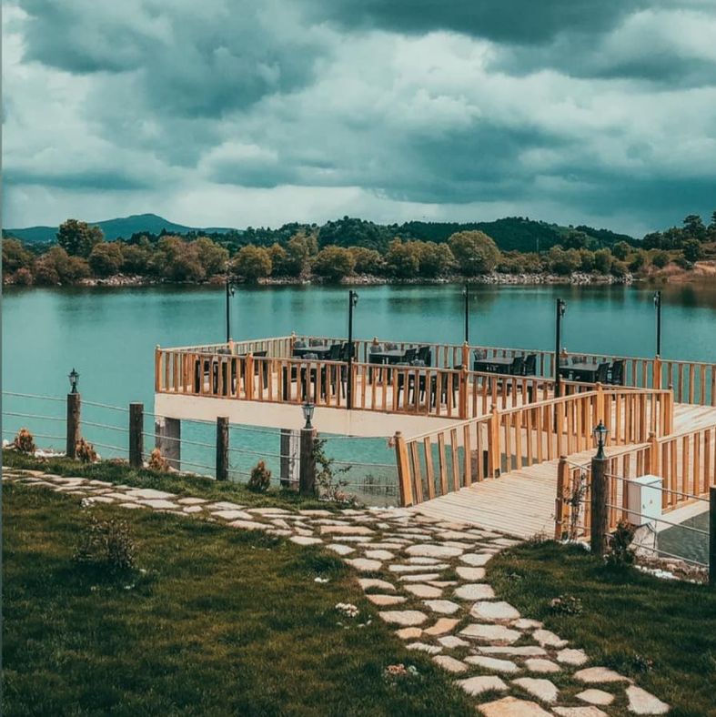
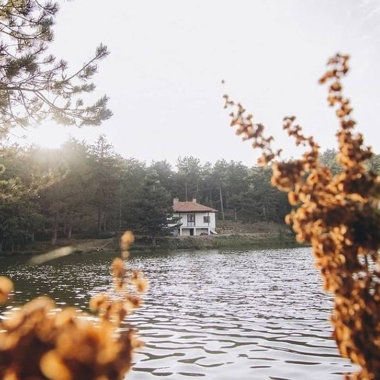

Simav doğal güzellikleri ve Yaren Folkloru bakımından ne denli zengin ise Arkeolojik buluntular
bakımından da o denli zengin bir tarihe sahiptir.
Bugün Simav’ ın milattan önce 4 binli yıllarda SUNAUVA – SYNAUS adında şehir kalıntısı üzerine kurulduğu
bilinmektedir. Hititler, Frigler, Doğu Roma (Bizans) dönemlerinde SYNAUS (Simav) ve ANKYRA (Boğazköy)
olarak tarihi zamanların iki yerleşim birimi, kurutulan Simav Gölünün güneydoğusu ve kuzeybatısında
varlıklarını devam etmiştir.
Milattan önce 1200 yıllarına kadar Abaitler adına bir halk yaşarken Trakya’ dan ve Çanakkale boğazından
yöreye Frig oymakları gelip yerleşti. Sonrasında Doğu Roma (Bizans) hakimiyetin de kalan Simav ve
çevresi 1113 yılında Edremit – Kırkağaç bölgesinden Kütahya – Eskişehir’ e yardıma dönen Selçuklu
Kumandanı EMİR MUHAMMET tarafından Simav Çayı vadisinden gelinerek fethedildi. 1921-1922 yılları
arasında Yunanlılar tarafından 3 kez işgale uğrayan Simav 4 Eylül 1922 tarihinde kurulmuştur.
Simav'ın Konumu
SİMAV'DA GEZİLECEK YERLER

KUŞU BARAJI
Kuşu’nun kesin tarihçesi bilinmemekle yaklaşık olarak 1400 ile 1500
yıları arasında kurulduğu ve yine yaklaşık olarak 600 yıllık bir
geçmişi olduğu sanılmaktadır. Kasabaya ilk yerleşenlerin Yörüklerden
olduğu ve rivayetlere göre Kuşu ismini alması ise Yörüklerin yerleşmesi
sırasında kuşların uçtuğu yerde su bulmalarının sebep olduğu sanılmaktadır.

MARTLI YAYLASI
Kütahya'nın Simav ilçe merkezine 40 kilometre mesafedeki Koyunoba köyü
sınırları içerisinde bulunan 1500 rakımlı Akdağ'ın eteklerinde, çam
ormanlarının içerisine gizlenmiş 4 mevsim akan Martılı Şelalesi ile Krater Gölü.
ÖREĞLER ŞELALESİ
Öreyler, Kütahya'nın Simav ilçesine bağlı bir kasabadır. Simav Dağları'nın
Kuzey yamacına yerleşik, hafif meyilli bir araziye sahiptir. Rakımı 1500
civarıdır. Yeşil bitki örtüsü oldukça geniştir. Dağları kestane, ceviz,
fındık, kızılcık, gürgen ve çam ağaçlarıyla doludur.
GÖLCÜK YAYLASI
Krater alanı, dört bir taraftan inen dereciklerle kar sularını toplayarak
küçük bir göle dönüşmüştür. Bu yüzden etrafında yaz ve kış yeşillik eksik
olmaz. Yaz aylarının en sıcak günlerinde buraya hırkasız çıkamazsınız.
Derin sessizliği, sadece başınızın üstündeki cam ağaçlarını çıkardığı hışırtı
bozar. Sırtüstü şöyle bir uzanırsınız, gökyüzünün maviliği ve çam ağaçlarının
yeşilliği gözlerinize sonsuz bir dinlenme sağlar, Bu durumda tertemiz havayı
iliklerinize kadar çekiniz; doyumsuz tadlara ulaşmak içten bile değildir.